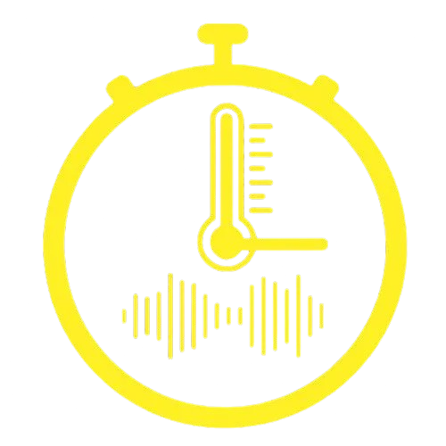
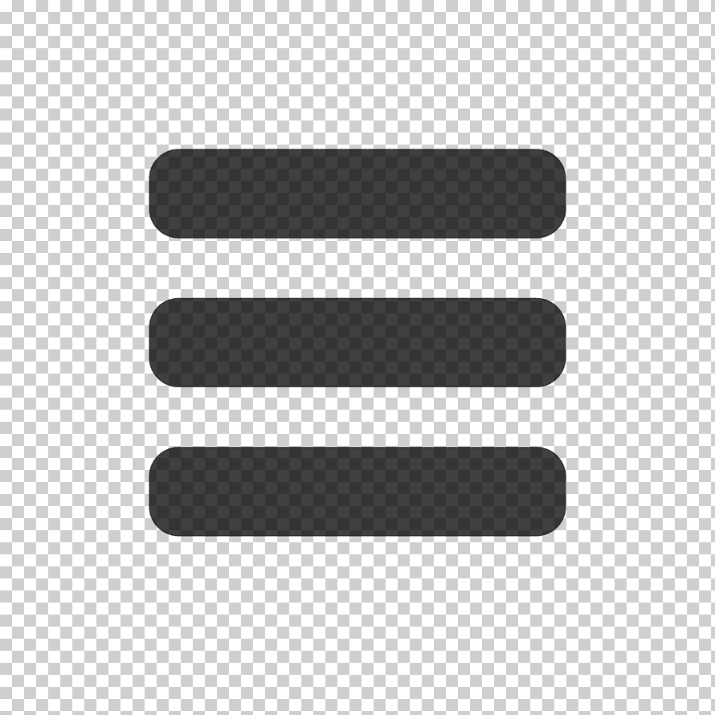

O.R.A.
Optimización, Rendimiento y Asistencia

Home
Simulador O.R.A.
Reloj en Tiempo Real
00:00:00
Cargando fecha...
Cambiar a 12h
Cronómetro
00:00:00
Iniciar
Detener
Reiniciar
Temporizador
Minutos
Segundos
05:00
100%
Iniciar
Detener
Reiniciar
Detenido
Sensor Ambiental
Temperatura
22
°C
Humedad
65
%
Actualización automática cada 5 segundos
Decibelímetro
45
dB
BAJO
Activar Micrófono
Estado:
Simulación